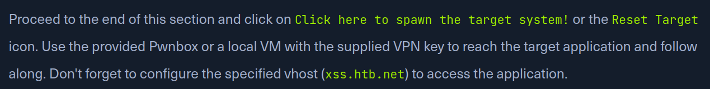
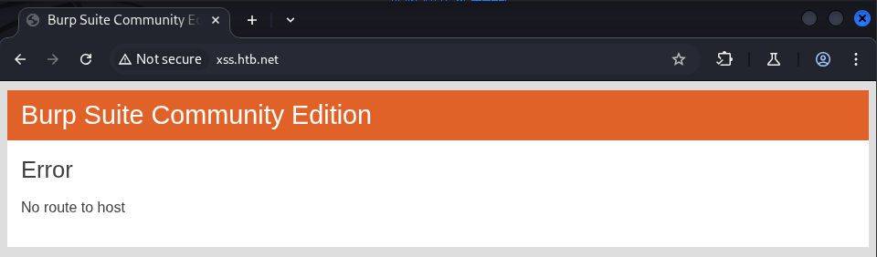
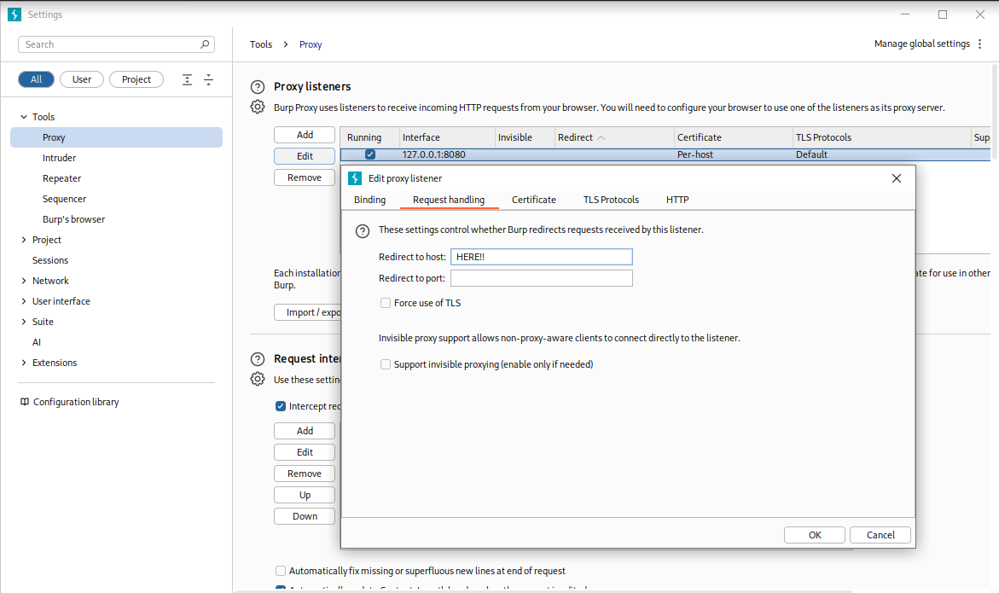
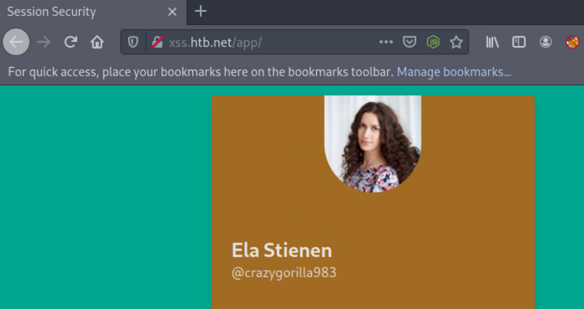
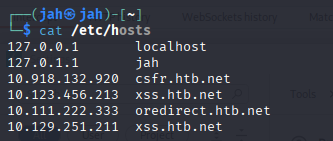
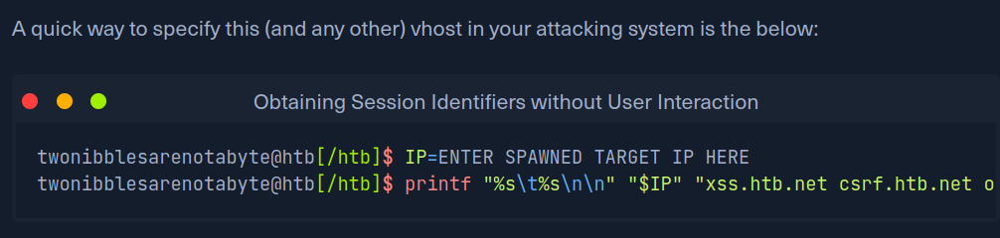

I was working on the "CSRF" chapter of Hack The Box module Session Security. The lab requires you to spawn a target VM so you can follow along.

Figure 1 — Cross-Site Request Forgery example.
I opened Burp Suite's embedded browser. After pasting the hostname into the URL bar and pressing Enter, I was shown the following error:

Figure 2 — "ERROR — no route to host" displayed in Burp's embedded browser.
I tried refreshing and restarting Burp, but the error persisted. A quick search pointed me to two relevant threads (Stack Overflow and an HTB Reddit discussion).
I was confused, but one comment suggested that on some corporate networks you must configure an upstream proxy. With that in mind, I checked Burp's proxy listener settings.

Figure 3 — Burp: Proxy → Options → Edit (listener) → Request handling.
Under Request handling there is a Redirect to host option. I first tried putting the HTB VPN IP there — no success. When I entered the target machine's IP address, the requests worked.

Figure 4 — Worked normally
Why it wasn't working
The lab instructions say: "Don't forget to configure the specified vhost (xss.htb.net) to access the application." I had accumulated multiple entries for the same hostname in /etc/hosts, each pointing to different IPs. Burp resolved the hostname to the first entry it found (the wrong IP), while Firefox (not using Burp's proxy) resolved to the correct, newer entry.

Figure 5 — /etc/hosts
Setting Redirect to host forced Burp to use the correct IP and bypass the ambiguous hostname resolution.
Takeaway: Keep your /etc/hosts clean. When using a proxy, either use the correct IP or ensure the vhost and host header are configured properly.
And also dont be dumb like me trying to do everything manually and use the automations they give you in the modules

Figure 6 — Automation!
— As this can not only save you headaches but also time!